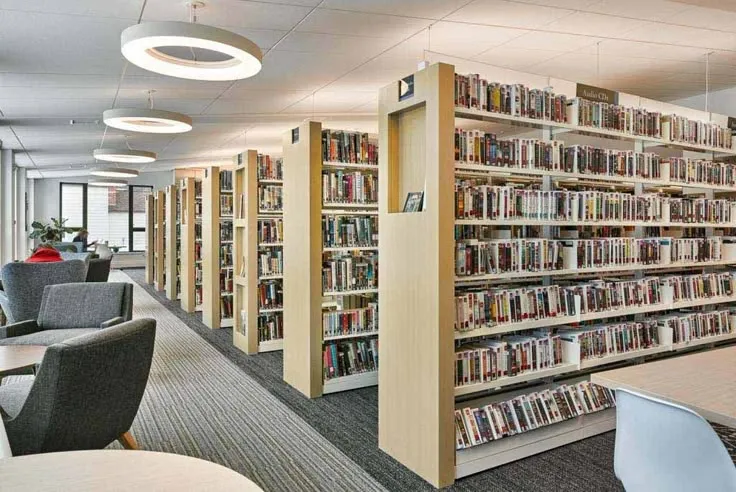

Berita & Artikel
Dapatkan informasi terbaru mengenai kegiatan sekolah dan wawasan pendidikan.

Siswa Kami Meraih Emas di Olimpiade Sains Nasional
Prestasi membanggakan kembali ditorehkan oleh siswa-siswi kita di kancah nasional dalam bidang sains terapan...
Baca Selengkapnya
Pentingnya Ekstrakurikuler untuk Karakter Anak
Pendidikan tidak hanya terjadi di dalam kelas. Berikut adalah mengapa kegiatan luar kelas sangat vital untuk anak...
Baca Selengkapnya
Persiapan PPDB Tahun Ajaran Baru 2024/2025
Penerimaan Peserta Didik Baru segera dibuka. Catat tanggal penting dan persyaratan yang harus dipersiapkan...
Baca Selengkapnya
Manfaat Literasi Pagi untuk Kebiasaan Belajar Siswa
Kebiasaan membaca singkat sebelum pelajaran dimulai membantu siswa lebih fokus, tenang, dan siap belajar...
Baca Selengkapnya
Pembelajaran Berbasis Proyek Membuat Siswa Lebih Aktif
Saat siswa terlibat menyusun ide, berdiskusi, dan mempresentasikan hasilnya, belajar terasa lebih bermakna...
Baca Selengkapnya
Peran Laboratorium Sains dalam Menumbuhkan Rasa Ingin Tahu
Praktik langsung di laboratorium membuat konsep sains lebih mudah dipahami sekaligus memantik rasa ingin tahu...
Baca Selengkapnya
Kegiatan Musik Melatih Percaya Diri dan Disiplin
Latihan musik mengajarkan konsistensi, kepekaan, dan keberanian tampil di depan banyak orang...
Baca Selengkapnya
Kelas Komputer Membantu Siswa Siap di Era Digital
Literasi digital yang diajarkan sejak dini membantu siswa lebih siap beradaptasi dengan kebutuhan masa depan...
Baca Selengkapnya
Pentingnya Perpustakaan sebagai Ruang Belajar
Perpustakaan yang hidup bukan hanya tempat meminjam buku, tetapi pusat belajar yang tenang dan inspiratif...
Baca Selengkapnya
Belajar di Luar Kelas Membuat Siswa Lebih Antusias
Suasana belajar yang berganti membantu siswa tetap fokus, aktif bertanya, dan terlibat lebih alami dalam prosesnya...
Baca Selengkapnya
Kegiatan Sosial Menumbuhkan Kepedulian Dini
Program sosial mengajak siswa memahami empati, tanggung jawab, dan pentingnya berbagi dalam kehidupan nyata...
Baca Selengkapnya
Upacara dan Olahraga Pagi Melatih Disiplin Siswa
Rutinitas pagi yang terarah membantu siswa membangun kebiasaan tepat waktu, tertib, dan siap menjalani hari...
Baca Selengkapnya